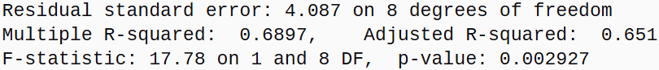
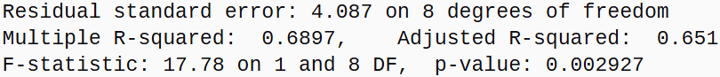

Prof D’s Regression Sessions - Vol 1
Time to go deep!
Adam Dennett - a.dennett@ucl.ac.uk
1st August 2024
CASA0007 Quantitative Methods
This week’s Session - Foundations
Motivation:
- Over the years I’ve marked too many dissertations and examined too many PhDs where people still get the basics of regression wrong - this is my attempt to help fix this once and for all!
- I’ve been using this method for 20 years and I still get things wrong and I’m still learning new things about it!
- Once you get the basics, it is perhaps THE most useful tool in your statistical toolbox
- Forget about machine learning and pointlessly complicated models - a simple regression model is your statistical Swiss Army Knife!
This week’s Session - Foundations
- A Recipe for Success:
- understanding your ingredients (data)
- understanding the basic method (rules) - sample size, heteroscedascity, variance, degrees of freedom
- baking your first cake (model)
- judging your efforts (interpreting the outputs)

This week’s Session - Foundations
- Applied Regression in the real world
- Any model is just a simplified version of reality
- A good model can offer you insights into the real world situation you are studying and can underpin good real world decisions
- a good model interpreted badly can lead to poor policy decisions
- a bad model, even if interpreted correctly, will probably also lead to poor policy decisions
- So we need to get both the modelling and the interpretation correct!
Our Real World Case Study - What are the Factors Affecting School-Level Educational Attainment in Brighton and Hove, England?
Secondary Schools and Attainment - GCSEs
- Secondary Schools mainly teach children between the ages of 11-16 in England and Wales (some 11-18, some 13-18)
- The examinations most children take at the end of Year 11 (age 16) are called GCSEs (General Certificate of Secondary Education)
- The GCSEs are graded from 9 (highest) to 1 (lowest), with a grade of 4 considered a “standard pass” and a grade of 5 considered a “strong pass”
Secondary Schools and Attainment - Attainment 8
- Attainment 8 is a measure that sums the grades for each pupil across 8 GCSEs (the standard number taken).
- Maths is always counted twice and English often counted twice where both language and literature are taken.
- Thus a maximum Attainment 8 score of 90 can be achieved
- 40 = Standard Pass, 50 = Strong Pass
- The Attainment 8 scores for all year 11 students can be averaged for each school giving a school-level average Attainment 8 Score
- Attainment 8 is a raw score and doesn’t account for important variations in the cohorts of students each school admits or the types of school, so direct comparison between schools without accounting for these factors is risky
Secondary Schools and Attainment - Progress 8
- Progress 8 is an alternative attainment score which looks at the progress a student makes between arriving at a school in year 7 or 9 and leaving at age 16
- It compares their levels of attainment at entry and exit with the progress made by similar students nationally
- Progress 8 is a ‘value-added’ ratio. A score of zero means students, on average, made expected progress, while a positive score means they made more progress than expected, and a negative score means they made less
Secondary Schools, Attainment and Urban Policy
- School performance and pupil attainment can be a big urban policy issue - particularly where variations in access and perceived quality occur
- These variations feed into broader socio-economic issues in cities
- In the UK, schools are the responsibility of local government
- Understanding the drivers behind pupil attainment and school performance vital for effective resource allocation and good local policy
{kind=link}
Secondary Schools, Attainment and Urban Policy
- In 2024, Brighton and Hove Council convinced pupil attainment mainly driven by Disadvantage Attainment Gap - socio-economically disadvantaged students perform worse than their more affluent peers
- Work of Professor Stephen Gorard, University of Durham, suggests mixing of disadvantage improves attainment
- Solution: create more socially mixed schools through a new controversial admissions policy
{kind=link}
Reserarch Question(s)
- What are the factors that affect school-level educational attainment in Brighton and Hove?
- To what extent is attainment driven by social mixing?
- Are there any other factors that are relevant?
- What are the implications of this for local policy?
- Can regression help us and, if it can, how can we go about carefully building a regression model to help us answer these questions?
A Reliable Regression Modelling Recipe
Step 1 - Ingredients
- The Exploratory Data Analysis phase is the most important part of any modelling exercise (see Weeks 1 & 2 of this course)
- Failure to get to know your data properly means you might mis-specify your model by:
- using the wrong explanatory variables or omitting some key ones
- misunderstanding your data types - e.g. counts vs continuous
- misunderstanding the relationships between your variables (linear vs logarithmic)
- not accounting for important spatial or temporal patterns (autocorrelation) that might mean your observations are not independent
Step 1a - Ingredients (gathering and preparation)
- The data is collected by the Department for Education (DfE) - a full annual census of each school’s
- Hundreds of variables collected relating to:
- attainment and progress
- pupil characteristics
- school characteristics
- Some data / variables (ingredients) will be more useful than others
{kind=link}
Step 1a - Ingredients (gathering and preparation)
Step 1b - Ingredients (familiarisation)
- Visualisation is perhaps the most important part of the EDA phase
- Always map and graph your data so that you can spot potential issues before they ruin your model!
Step 1b - Ingredients (familiarisation)
{kind=link}
- Hmmm? Are there any problems that could be indicated here?
Step 1b - Ingredients (familiarisation)
{kind=link}
- Notice anything now?
- What could/should we do about it? Any suggestions?
Step 1c - Ingredients (selection)
{kind=link}
Step 1c - Ingredients (selection)
{kind=link}
Step 1c - Ingredients (selection)
{kind=link}
Step 1c - Ingredients (selection)
- The process of exploring and interrogating your data should take much longer than the modelling at the end
- The process is iterative - you might well be exploring your data and the theory at the same time to help you explore, filter, select and prepare for the modelling phase
flowchart TD
A["<img src='L6_images/Data.png'>"] --> B[<img src='L6_images/Book.png'>]
B[<img src='L6_images/Book.png'>] --> A["<img src='L6_images/Data.png'>"]
Step 1c - Ingredients (selection)
Step 1c - Ingredients (selection)
- The role of theory and wider research on your system is vital in helping you select your variables for investigation
- DO NOT JUST THROW EVERYTHING INTO YOUR MODEL JUST BECAUSE YOU HAVE SOME VARIABLES
- This is a common mistake
- It can also lead to spurious interpretation where correlation and causation are not the same thing
- Carrying out a thorough literature review will also give you context for interpreting your model results later on in the process
- ALWAYS CARRY OUT A THOROUGH LITERATURE REVIEW TO HELP GUIDE YOUR DATA / VARIABLE SELECTION
Step 1c - Ingredients (selection)
- Brighton and Hove City Council relied heavily on the work of Gorard in building its policy
- Paper links social mixing to improved attainment for disadvantaged pupils
- Includes variables such as:
- school type (e.g. academy, maintained)
- pupil characteristics (e.g. free school meals (FSM) eligibility, special educational needs, ethnicity)
- school characteristics (e.g. size, location)
- Thus all might be worth investigating
{kind=link}
Step 1c - Ingredients (selection)
- However, wider reading also suggests that factors such as attendance (which Gordard does not include in his paper as a variable) may also play a big role in the attainment of disadvantaged pupils
- Work by Claymore suggests that a large proportion of the gap in attainment between disadvantaged pupils and more affluent peers can be explained by:
- the differences in absence rates
- exclusion
- rates of moving between schools

Step 2 - Method
flowchart TD
I{Choosing a <br/>statistical test} -->
A[How Many Variables?] -->
C(2?) & G(More than 2?)
C -->|Categorical?| D(Chi Squared <br/>or Similar e.g. T-test)
C -->|Scale or Ratio?| E(Pearson Correlation <br/>or Spearman's Rank)
C -->|Both?| F(Ask Google)
G --> H(REGRESSION - everything else, <br/>get in the bin)
Linear Regression - It’s just a scatter plot!
{kind=link}
- A regression model is nothing more than a description of a scatter plot
- Dependent variable = \(Y\)-axis
- Independent variable = \(X\)-axis
Linear Regression - Line of Best-fit
{kind=link}
- The linear regression model is the straight line of best-fit
- A linear model function
lm()(inR) uses a method called Ordinary Least Squares (OLS) to find the line of best-fit. - The best line minimises the squared (so that negatives and positives don’t cancel) vertical distances between the line and the points - hence OLS
Linear Regression - Residuals / Error
{kind=link}
- The vertical distances between the points and the line of best fit are called the residuals - sometimes also referred to as the errors or \(\epsilon\)
- The closer the points are to the line, the better the fit of the model
Linear Regression - R-Squared
{kind=link}
- The fit of the model is represented by the coefficient of determination or \(R^2\) value (0-1), which is calculated from the residuals
- It describes how much of the variation in \(Y\) (Attainment 8 score) is explained by the variation in \(X\) (% Disadvantaged Students) - here 69%
- The closer to 1 (100%), the better the fit of the model
Linear Regression - R-Squared

- It’s easy to visually estimate your \(R^2\) value from looking at how well correlated the points are. NB as squared, always +
Linear Regression - Slope and Intercept
{kind=link}
- The regression line itself can be described by an equation with two parameters / coefficients:
- The intercept - \(\beta_0\) - which is the value of \(Y\) when \(X = 0\)
- The slope - \(\beta_1\) - which the change in the value of \(Y\) for a 1 unit change in \(X\)
Linear Regression - Slope and Intercept
- Another way of thinking of your intercept is as your model baseline.
- In our case: baseline attainment, controlling for disadvantage.
- Higher or lower intercept values for different local authorities relate to higher or lower baseline attainment.
- Another way of thinking about your slope is the level of influence your \(X\) variable might be having on your \(Y\) variable
- Higher value = Steeper Slope = More influence
- Lower value = more horizontal slope = Less influence
Linear Regression - Model Estimates
{kind=link}
\[Y = \beta_0 + \beta_1X_1 + \epsilon\] \[\hat{Y} = 62.35 + (-0.63 \times X) + \epsilon\] \[40.3 = 62.35 + (-0.63 \times 35) + 0\]
Linear Regression - The Statistical Model
- Scatter plots are an excellent intuitive way to understand the relationship between two continuous variables
- But algorithms are required to generate the various plot statistics and other useful info
- Lots of different statistical software packages will do this
- Doesn’t matter which you use, they all do pretty much the same thing under the hood


Linear Regression - The Statistical Model
Call:
lm(formula = ATT8SCR ~ PTFSM6CLA1A, data = btn_sub)
Residuals:
Min 1Q Median 3Q Max
-8.300 -2.165 1.400 2.567 4.738
Coefficients:
Estimate Std. Error t value Pr(>|t|)
(Intercept) 62.3457 3.7367 16.685 1.68e-07 ***
PTFSM6CLA1A -0.6292 0.1492 -4.217 0.00293 **
---
Signif. codes: 0 '***' 0.001 '**' 0.01 '*' 0.05 '.' 0.1 ' ' 1
Residual standard error: 4.087 on 8 degrees of freedom
Multiple R-squared: 0.6897, Adjusted R-squared: 0.651
F-statistic: 17.78 on 1 and 8 DF, p-value: 0.002927- Example output from R
Linear Regression - Running the Model
{kind=link}
- This is the code representation of the model equation we saw earlier:
lm()is the function that fits a linear modelATT8SCR(Attainment 8 Score) is the dependent variable \(Y\)~means “is modelled by”PTFSM6CLA1A(% Disadvantaged Students) is the independent variable \(X\)data = bnt_subis the dataset we are using which contains the variables
Linear Regression - Residuals and Error
 

- The residual errors range from -8.3 (Longhill) to + 4.7 (Varndean)
- The residual standard error of 4.087 = predictions for School’s Attainment 8 score are off by about 4.1 points
- Residual Standard Error (RSE) and \(R^2\) are inversely related - A smaller RSE and larger \(R^2\) both mean a more precise model
- The F-Statistic is a ratio of the amount of variance in \(Y\) explained by the model to that not. x17.7 more - statistically significant <0.005
Linear Regression - Degrees of Freedom
{kind=link}
- DF are the Degrees of Freedom in the model. DF very important for understanding how reliable your \(R^2\) value might be
- The first number (1) relates to the number of variables
- The second number (8) relates to the number of observations (cases) in the dataset, minus the number of parameters
- In our example we have 10 observations and 2 parameters (intercept and slope) so \(10 - 2 = 8\) degrees of freedom
Linear Regression - Degrees of Freedom
- General rule: more degrees of freedom = more reliable model
- A model with many parameters vs observations will bend to fit those observations and not be a good generalisation - this is called overfitting
- A model with little freedom might appear to have a high \(R^2\)
- but it is likely to perform poorly on new, unseen data
- it has captured the characteristics of your specific dataset rather than an underlying truth
- General Rule: the more observations in your dataset the better!
- High \(R^2\) with low DF = 💩
Linear Regression - Degrees of Freedom
{kind=link}
- 2 observations - 2 parameters = 0 degrees of freedom
Linear Regression - Degrees of Freedom
{kind=link}
- 3 observations - 2 parameters = 1 degree of freedom
Linear Regression - Degrees of Freedom
{kind=link}
- 4 observations - 2 parameters = 2 degrees of freedom
Linear Regression - Degrees of Freedom
{kind=link}
- 5 observations - 2 parameters = 3 degrees of freedom
Linear Regression - Degrees of Freedom
- How many Degrees of Freedom are required for a reliable model?
- No single, universally agreed-upon number - aim to maintain a healthy ratio of observations to the number of parameters
- A common rule of thumb is the 10:1 ratio - 10 observations for every 1 parameter - although this is a rough guide. If in doubt, even up to 20:1 to be safe
- In our example, we have 10 observations and 2 parameters = 5:1 ratio = so a potentially unreliable model - proceed with extreme caution!
Linear Regression - Variance
- Degress of Freedom are also used to calculate the variance of the model
- If you ran the same model on different samples of the same population - e.g instead of Brighton, you ran this model on schools in Leeds or Bristol or Liverpool - you would get different values for your coefficients each time
- How similar these are to each other and more importantly the the whole population (all schools in England and Wales) is the variance - you want to minimise the variance in your coefficients if you want to generalise your model to the wider population
- We will return to the idea of variance in the practical
Linear Regression - Coefficients 1
{kind=link}
- The Estimates (\(\beta\))
- Intercept \(\beta_0\) - estimated Attainment 8 value when % Disadvantaged Children in a school is zero
- PTFSM6CLA1A (slope \(\beta_1\)) - effect of a one-unit change in the % Disadvantaged Children on Attainment 8 - therefore linked to the units of the independent variable and not directly comparable across different variables if measured on different scales
Linear Regression - Coefficients 2
- The Standard Error (SE) - measure of the uncertainty or precision of the estimate (coefficient) - how much it might vary
- Large SE relative to the Estimate = estimate unreliable / uncertain
- SE of 0.15 for the estimate of -0.63 for PTFSM6CLA1A means the change in the value of Attainment 8 for a 1% change in disadvantaged students could vary between -0.48 and -0.78
Linear Regression - Coefficients 3
- The t-value - ratio of the \(\frac{Estimate}{SE}\)
- a large standard error will make the t-value small (close to zero)
- t-values can be thought of as a standardised coefficient - very useful for comparing the relative importance of different predictors in the model
- The larger the t-value, the more important the predictor is in explaining the variation in the dependent variable - more important the variable
Linear Regression - Coefficients 4
- The \(P\)-value - \(P\)-robability of observing a t-value as extreme as the one calculated if there were no relationship between the independent and the dependent variable
- A small \(P\)-value (typically \(p\) < 0.05) indicates <5% chance that \(X\) is not really explaining variation in \(Y\)
- The Signif. codes (like *** and **) are just a quick visual guide to this p-value, showing you at a glance which variables are significant.
- Any parameter with 1, 2 or 3* is “statistically significant” at 5% or better
Linear Regression - Coefficients 4
- The \(P\)-values relate to the null hypotheses that:
- The true value of the intercept (baseline attainment) is zero when the independent variable (% disadvantage) is zero.
- \(P\) <0.001 = <0.1% \(P\)-robability that 62.3 occurred by random chance
- Note - It doesn’t tell us that when % Disadvantaged is zero, 62.3 will be a correct Attainment 8 score, just that real value is unlikely to be zero
Linear Regression - Coefficients 4
- The \(P\)-values relate to the null hypotheses that:
- The true value of the PTFSM6CLA1A slope (relationship between % Disadvantaged and Attainment 8) is zero. \(P\)- < 0.01 = <1% \(P\)-robability that the relationship observed is by chance. Relationship is likely to be real.
Linear Regression - Summary so far
{kind=link}
Variation in % disadvantaged students in schools in Brighton appears to explain about 65-68% of the variation in Attainment 8 at the school level
The % disadvantaged students is a statistically significant predictor and the relationship appears to be linear
A 1% reduction in the number of disadvantaged students in a school appears to be associated with a 0.62 point increase in Attainment 8, and vice versa. So the council was right? Well, not quite…
Linear Regression - Summary so far
- The degrees of freedom in the model are small, so model likely to be over-fitted and unreliable for generalisation
- Small numbers of observations (schools in the city) mean that the model is highly sensitive to changes in the data
- It’s also unclear whether there are any other factors that might be correlated with disadvantaged students that might also be influencing Attainment 8 scores and confounding (return to this later) the apparent relationship we observe
- What are the practical consequences of overfitting?
Linear Regression - Overfitting, Outliers and High Leverage Points
- When we overfit, the model can be overly influenced by outliers (large residuals) and changes in key leverage points (points that are far from the mean of the independent variable)
- What happens to our model if:
- a school improvement plan brings the outlier (Longhill) closer to attainment at Hove Park?
- Council makes Varndean increase its disadvantaged intake to 30%?
- And BACA improves its Attainment 8 to the city average following a huge cash injection from its academy trust?
Linear Regression - Overfitting, Outliers and High Leverage Points
{kind=link}
- Plausible changes to three schools have almost completely removed relationship between % Disadvantaged Students & Attainment 8
- Overfitting -> parameters highly sensitive to minor changes to a few key data points
- The closer the best-fit line gets to horizontal, the closer we get to NO RELATIONSHIP between the independent and dependent variables
Linear Regression - Overfitting, Outliers and High Leverage Points
Call:
lm(formula = ATT8SCR ~ PTFSM6CLA1A, data = btn_edit)
Residuals:
Min 1Q Median 3Q Max
-4.4563 -2.4489 -0.5964 2.4240 6.0536
Coefficients:
Estimate Std. Error t value Pr(>|t|)
(Intercept) 54.5204 3.2593 16.728 1.65e-07 ***
PTFSM6CLA1A -0.2025 0.1252 -1.617 0.145
---
Signif. codes: 0 '***' 0.001 '**' 0.01 '*' 0.05 '.' 0.1 ' ' 1
Residual standard error: 3.476 on 8 degrees of freedom
Multiple R-squared: 0.2462, Adjusted R-squared: 0.152
F-statistic: 2.614 on 1 and 8 DF, p-value: 0.1446- Overall \(P\)-value of model now statistically insignificant >0.1
- % Disadvantage in Schools now statistically insignificant
Linear Regression - More Degrees of Freedom
{kind=link}
- Now we have a model that includes all schools in England and Wales
- Negative association present - appears to confirm Gorard’s observation
- R-Squared is reasonable - 34% of the variation explained
Linear Regression - More Degrees of Freedom
Call:
lm(formula = ATT8SCR ~ PTFSM6CLA1A, data = england_filtered)
Residuals:
Min 1Q Median 3Q Max
-36.268 -4.894 -1.345 3.662 33.140
Coefficients:
Estimate Std. Error t value Pr(>|t|)
(Intercept) 56.955578 0.280566 203.00 <2e-16 ***
PTFSM6CLA1A -0.377548 0.009251 -40.81 <2e-16 ***
---
Signif. codes: 0 '***' 0.001 '**' 0.01 '*' 0.05 '.' 0.1 ' ' 1
Residual standard error: 7.59 on 3248 degrees of freedom
(101 observations deleted due to missingness)
Multiple R-squared: 0.339, Adjusted R-squared: 0.3388
F-statistic: 1665 on 1 and 3248 DF, p-value: < 2.2e-16- We now have 3248 degrees of freedom
- Intercept and % Disadvantaged Students both highly significant
- Life is good? Wrong… Houston, we have some more problems!!
Linear Regression - Other Regression Assumptions
- I forgot to mention - there are another set of rules to follow to ensure our linear regression is reliable:
- Linearity: The relationship between the independent and dependent variables is linear
- Homoscedasticity: Constant variance of residuals across all levels of the independent variable
- Normality of residuals: Residuals are normally distributed
- No multicollinearity: Independent variables are not highly correlated
- Independence of residuals: Errors are not related to each other with each other
Linear Regression - Linearity?
{kind=link}
- Linearity - Does your line go through all the points nicely?
- Hmmmm - suggestion of non-linearity with big up-tick at the low end of disadvantage
Linear Regression - Linearity?
{kind=link}
- Ploting the residuals against the fitted values is one check for linearity
- The residuals should be randomly scattered around zero - if they are not, it suggests a non-linear relationship
- The reference line should be horizontal at zero
Linear Regression - Homoscedasticity (Constant variance)?
{kind=link}
- Issues here too: the residuals are not randomly scattered around zero
- They are instead displaying heteroscdasticity (different variance)
Linear Regression - Normality of Residuals?
{kind=link}
- This is known as a Q-Q plot (Quantile-Quantile plot)
- A number of points not on the line - suggesting the residuals are not normally distributed
- Many points off line could mean untrustworthy p-values
Linear Regression - Outliers?
{kind=link}
- At least we don’t have any problems with outliers!
Linear Regression - Diagnostics
- Linearity: 😭
- Homoscedasticity: 😭
- Normality of residuals: 😭
- No multicollinearity: 🕦
- Independence of residuals: 🕦
- Presently our model violates most of the key assumptions that underpin linear regression models. What this means is that in its current form, the relationship between % Disadvantaged Students and Attainment 8 described by the model is not reliable
Linear Regression - Non-Linearity
\[log(Y) = \beta_0 + \beta_1log(X_1) + \epsilon\]
{kind=link}
- The log(\(Y\)) log(\(X\)) model is a standard transformation of these variables that can help to linearise relationships
- Sometimes referred to as an elasticity model - a % (rather than constant) change in \(X\) leads to a % (not constant) change in \(Y\)
Linear Regression - the log-log transformation
{kind=link}
Linear Regression - the log-log transformation
{kind=link}
Linear Regression - the log-log transformation
Call:
lm(formula = log(ATT8SCR) ~ log(PTFSM6CLA1A), data = england_filtered)
Residuals:
Min 1Q Median 3Q Max
-1.20789 -0.08730 -0.00789 0.08197 0.56024
Coefficients:
Estimate Std. Error t value Pr(>|t|)
(Intercept) 4.475612 0.012893 347.14 <2e-16 ***
log(PTFSM6CLA1A) -0.207443 0.004054 -51.18 <2e-16 ***
---
Signif. codes: 0 '***' 0.001 '**' 0.01 '*' 0.05 '.' 0.1 ' ' 1
Residual standard error: 0.1438 on 3246 degrees of freedom
Multiple R-squared: 0.4465, Adjusted R-squared: 0.4464
F-statistic: 2619 on 1 and 3246 DF, p-value: < 2.2e-16- Everything now looks highly statistically significant
- \(R^2\) is much better than before - 45%
Linear Regression - the log-log transformation
{kind=link}
- The residuals are now randomly scattered around zero - suggesting a linear relationship
Linear Regression - the log-log transformation
{kind=link}
- The residuals are now normally distributed - the Q-Q plot shows most points on the line
Linear Regression - the log-log transformation
- Interpreting the log-log (elasticity) relationship:
- Where the relationship is negative, a small absolute change in the independent variable at the lower end has a bigger impact than the same small absolute change at the higher end
- On our original plot: the effect of levels of disadvantage on attainment is much stronger at very low levels of disadvantage and weakens as the level of disadvantage increases
Linear Regression - Level-log model
\[Y = \beta_0 + \beta_1log(X_1) + \epsilon\]
{kind=link}
- Other options are to use a level-log model, where the dependent variable is not transformed but the independent variable is log-transformed.
- Use when the effect of the independent variable has diminishing returns - e.g. a change from \(log(2.7%)\) or \(exp(1)\) to \(log(7.3%)\) \(exp(2)\) disadvantaged students has same effect as a change from \(log(20%)\) \(exp(3)\) to \(log(54.5%)\) \(exp(4)\)
Linear Regression - Level-log model
Call:
lm(formula = ATT8SCR ~ log(PTFSM6CLA1A), data = england_filtered)
Residuals:
Min 1Q Median 3Q Max
-43.631 -4.377 -0.919 3.504 34.071
Coefficients:
Estimate Std. Error t value Pr(>|t|)
(Intercept) 79.0199 0.6080 129.97 <2e-16 ***
log(PTFSM6CLA1A) -10.3070 0.1911 -53.92 <2e-16 ***
---
Signif. codes: 0 '***' 0.001 '**' 0.01 '*' 0.05 '.' 0.1 ' ' 1
Residual standard error: 6.78 on 3246 degrees of freedom
Multiple R-squared: 0.4725, Adjusted R-squared: 0.4723
F-statistic: 2908 on 1 and 3246 DF, p-value: < 2.2e-16Linear Regression - Level-log model
{kind=link}
Linear Regression - Level-log model
{kind=link}
Linear Regression - to log or not to log?
- The log-log model appears a better fit than the level-log model, however both are better than the basic linear model
- How to proceed will depend a little on whether we want to extend our model with other explanatory variables and the relationship they have with attainment
- Log-log - use when the relationship is believed to be multiplicative and the effects are best understood in terms of percentage changes.
- This model is also excellent at addressing issues with heteroscedasticity and skewed variables
- Level-log - use when the effect of the independent variable has diminishing returns
Conclusions
- Regression Basics - DONE!
- Won’t summarise here, but please go over the slides again in your own time
- Now is your chance to put everything I have just said into practice in your own very similar analysis in the practical
- Practical is long - you won’t complete in this session, but spend time going through it at home
- Make sure you complete the practical and understand all of this before next week’s Regression Sessions Vol. 2 as it will build on and extend this session
Extension Activities
Extension 1 - Data Visualisation

© CASA | ucl.ac.uk/bartlett/casa